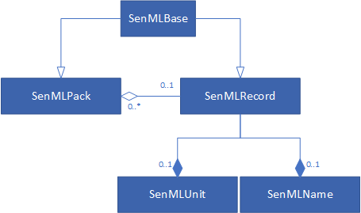
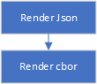
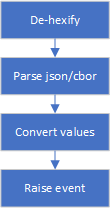
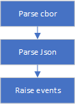

Introduction
Welcome to the KPN SenML API documentation! You can use our library for the creation of senml documents on embedded devices so you can transport and/or receive data in a uniform way to and from devices using a communication protocol of your choice.
For an indepth look into what senml is and what it can mean for you, check out this article.
key features
Note: The python versions do not provide extended support for memory restricted devices
- Object oriented design.
- built in support for senml's unit registry
- extensible for new data types
- makes use of (but doesn't restrict to) KPN's predefined list of record names.
- direct support to read/write in json and cbor format.
- automatically adjusts record data with respect to base time, base value & base sum.
- The C++ version of the library is optimized for devices with restricted memory requirements (runs on AVR systems with 2kb ram).
supported platforms
The library has been tested on the following devices:
- C++:
- arduino leonardo (through the marvin lorawan board)
- mbed LPC1768
- Sodaq one
- Esp32
- Python
- raspberry 3
- pc
- micro-python
getting started
installation
Get it from github
You can import it using this link: mbed senml library (click on 'import into compiler) or directly from within the mbed online editor. Search for the library senml
Install using the pip command:
pip install senmlkpn
Get it from github
Your project directory should look like this:
- boot.py
- main.py
- lib
- cbor_decoder.py
- cbor_encoder.py
- senml_kpn_names.py
- senml_pack.py
- senml_record.py
- senml_unit.py
- Get the library. You can find the language appropriate link to the right.
- Installation:
- arduino:
- Follow these instructions to install the library in the arduino ide.
- For AVR systems like the marvin, you will need the following external library: Base64
- mbed: on the mbed online editor:
- create or open a project
- right click on the project and select 'import library'
- if you select from url, use the mbed senml library
- if you select: 'from import wizard':
- search for 'senml'
- double click on the search result which will start the import process.
- This library depends on another library for base64 support called mbedtls. This has to be included separatly into your project for some boards like the LPC1768), others already have this library built into the os lib like the MAX32620FTHR. To import the library follow these steps:
- right click on the project and select 'import library/from import wizard'
- search for mbedtls (in the search box, it's best to type in tls)
- double click on the library which will start the import process.
- if your system complains about some functions being declared 2 times, remove the mbedtls library and rebuild.
- python: use pip to install the library:
pip install kpn-senml - micropython:
- download the library
- extract the content of the zip file and put the library files (don't need the examples in your own project) in the 'lib' directory of your project.
- arduino:
usage
#include <kpn_senml.h>
#include <kpn_senml.h>
from kpn_senml import *
from kpn_senml import *
- First off, you need to include the library in your sketch or application. So put the example code (in the right side panel ) somewhere near the top of your source.
SenMLPack doc("device_name");
SenMLPack doc("device_name");
doc = SenmlPack("device_name")
doc = SenmlPack("device_name")
- Next, you have to declare a variable of type 'SenMLPack', which will function as the document that contains all your measurement values. This can be a global or local to a function.
void loop(){
int val = analogRead(A1);
SenMLFloatRecord rec(KPN_SENML_TEMPERATURE, SENML_UNIT_DEGREES_CELSIUS, val);
doc.add(&rec);
int main() {
// check mypin object is initialized and connected to a pin
if(mypin.is_connected()) {
printf("mypin is connected and initialized! \n\r");
}
mypin.mode(PullNone);
while(1) {
int val = mypin.read();
SenMLFloatRecord rec(KPN_SENML_TEMPERATURE, SENML_UNIT_DEGREES_CELSIUS, val);
doc.add(&rec);
while True:
with SenmlRecord(SenmlNames.KPN_SENML_TEMPERATURE, unit=SenmlUnits.SENML_UNIT_DEGREES_CELSIUS, value=23.5) as rec:
doc.add(rec)
while True:
with SenmlRecord(SenmlNames.KPN_SENML_TEMPERATURE, unit=SenmlUnits.SENML_UNIT_DEGREES_CELSIUS, value=23.5) as rec:
doc.add(rec)
- Measurement values are added to the document through objects of the type SenMlRecord (for C++ versions this will be one of it's descendants as there is a class for each data type ). These can also be global, statically declared objects or they can be local to a function. These always need to have a value or sum, but usually you also give records a name and measurement unit. The library contains a set of predefined values for both records a name and measurement unit. Although you are free to pick any record name that you want, this is not the case for the units. This list is fixed.
doc.toJson(&Serial); //print to screen
}
Serial pc(USBTX, USBRX);
doc.toJson(&pc); //print to screen
pc.printf("\n\r");
}
}
print(doc.to_json())
print(doc.to_json())
- finally, you can render the senml json string and print it out. In C++, this can be either to a stream or you can render it to a memory buffer. Python always renders to memory.
The resulting code snippet reads the value, stores this measurement in a senml record as temperature in degrees Celsius and adds this record to the document. Finally, the document object renders a json string to the Serial output, or for python, just prints it to the screen.
At the end of the function, the record is destroyed cause it goes out of scope. This will automatically remove it from the document, so on the next run, the document will be empty again and a new record can be added.
details
object oriented: class structure
C++

The root class for all senml documents is called 'SenMlPack'. It defines the base name, base unit and base time of the document. This object can also contain 0, 1 or more SenMlRecords where each record represents a single measurement (or command for actuators ).
In order to declare a base value or base sum, you have to use one of SenMLPack's descendants with the correct data type.
The library contains a pre-defined SenMlRecord class for the most common data types: string, boolean, float, integer and binary. But, you can extend this with your own types through the SenMLRecord template for basic data types such as longlong or double. And, if you want to go even deeper, you can extend the SenMLRecord base class, which can be useful for creating records that have multiple values like coordinates.
A SenMLPack can contain all object types as children: anything that descends from SenMLBase can be a child. See gateways for more info.
python

As you can see, the python version of the library is much simpler compared to the C++ version. This is primarily due to the fact that python automatically resolves data types, so there is no need for complex class structures.
The library's setup is very similar to the C++ version: Use a SenMLPack object to represent documents. Measurements or actuator commands are declared with SenMLRecords.
A SenMLPack can contain all object types as children: anything that descends from SenMLBase can be a child. See gateways for more info.
names and units
The library defines an enum for all of senml's supported measurement units (as in 'kilogram', 'meter',...). This makes it easier to keep compliance with the senml specifications so you don't have to worry about the exact unit symbols: the library takes care of this.
Similarly, the library also provides an enum (or set of #defines in C++) with all the record names that the KPN network supports.
Although it is possible that you assign your own name to a record, it is recommended to use KPN's naming convention as this allows data to be addressed in a more semantic manner.
Both parameters are supplied through the constructor of the SenMlRecords.
According to the SenML specifications, all names are optional, so you don't have to declare a base name on the SenMLPack object nor a name for SenMLRecords. This makes it harder though to identify your data. In general, it is advisable to specify the name of the device as the base name and the name of the sensor as the record name. Alternatively, you can skip the base name and put both device and sensor name in the record, in this format: device:sensor.
associating records with a document
SenMLFloatRecord rec(KPN_SENML_TEMPERATURE, SENML_UNIT_DEGREES_CELSIUS, val);
doc.add(&rec);
SenMLFloatRecord rec(KPN_SENML_TEMPERATURE, SENML_UNIT_DEGREES_CELSIUS, val);
doc.add(&rec);
SenmlRecord(SenmlNames.KPN_SENML_TEMPERATURE, unit=SenmlUnits.SENML_UNIT_DEGREES_CELSIUS, value=23.5)
doc.add(rec)
SenmlRecord(SenmlNames.KPN_SENML_TEMPERATURE, unit=SenmlUnits.SENML_UNIT_DEGREES_CELSIUS, value=23.5)
doc.add(rec)
You can add records to the document with the function add. This can be done statically (add once at start up and never remove ) for devices that will always send out the same document structure with the same records. Or, you can dynamically add records to the document as your application progresses. A common use case for this method is when the device does not have network connectivity at the moment that the measurement is taken, but instead, takes a number of measurements, and, when a connection is available, uploads all the measurements at once. This method is also useful to minimize the number of communication packets that a device sends out by grouping multiple measurements into a single data packet.
doc.clear();
doc.clear();
doc.clear()
doc.clear()
For documents that work with a dynamically sized list of records, you can clear out the list once the data has been sent.
Alternatively ,when SenMlRecords go out of scope or are deleted, they remove themselves automatically from their root document.
loop over the records
SenMLPack doc("device_name");
SenMLFloatRecord rec(KPN_SENML_TEMPERATURE, SENML_UNIT_DEGREES_CELSIUS, 23.5);
doc.add(&rec);
SenMLBase* item = doc.getFirst();
while(item != NULL){
Serial.println(((SenMLRecord*)item)->getName());
item = item->getNext();
}
SenMLPack doc("device_name");
SenMLFloatRecord rec(KPN_SENML_TEMPERATURE, SENML_UNIT_DEGREES_CELSIUS, 23.5);
doc.add(&rec);
SenMLBase* item = doc.getFirst();
while(item != NULL){
printf(((SenMLRecord*)item)->getName());
item = item->getNext();
}
doc = SenmlPack("device_name")
rec = SenmlRecord(SenmlNames.KPN_SENML_TEMPERATURE, unit=SenmlUnits.SENML_UNIT_DEGREES_CELSIUS, value=23.5)
doc.add(rec)
for item in doc:
print(item.name)
doc = SenmlPack("device_name")
rec = SenmlRecord(SenmlNames.KPN_SENML_TEMPERATURE, unit=SenmlUnits.SENML_UNIT_DEGREES_CELSIUS, value=23.5)
doc.add(rec)
for item in doc:
print(item.name)
C++
Internally, the C++ version uses a linked list to store the records that it manages. This helps in minimizing the usage of dynamically allocated memory (important for devices with little available ram).
To walk over the child list of a SenMLPack, you can use the following functions:
- SenMLPack::getFirst() : retrieve the first item in the list
- SenMLBase::getNext() : get the next item in the list. When this returns NULL, the end of the list has been reached.
python
Internally, the python versions use standard python arrays to store the data. The list of a SenMLPack is exposed through an iterator. This way, you can use the standard loop features of python to walk over the list.
gateways
SenMLPack doc("gateway");
SenMLPack dev1("dev1");
SenMLPack dev2("dev2");
doc.add(&dev1);
doc.add(&dev2);
SenMLFloatRecord rec1(KPN_SENML_TEMPERATURE, SENML_UNIT_DEGREES_CELSIUS, 20.12);
dev1.add(&rec1);
SenMLStringRecord rec2("text", SENML_UNIT_NONE, "working");
dev2.add(&rec2);
SenMLPack doc("gateway");
SenMLPack dev1("dev1");
SenMLPack dev2("dev2");
doc.add(&dev1);
doc.add(&dev2);
SenMLFloatRecord rec1(KPN_SENML_TEMPERATURE, SENML_UNIT_DEGREES_CELSIUS, 20.12);
dev1.add(&rec1);
SenMLStringRecord rec2("text", SENML_UNIT_NONE, "working");
dev2.add(&rec2);
doc = SenmlPack("gateway")
dev1 = SenmlPack("dev1")
dev2 = SenmlPack("dev2")
doc.add(dev1)
doc.add(dev2)
door_pos = SenmlRecord("doorPos", update_time=20, value=True)
dev1.add(door_pos)
str_val = SenmlRecord("str val")
dev2_pack.add(str_val)
doc = SenmlPack("gateway")
dev1 = SenmlPack("dev1")
dev2 = SenmlPack("dev2")
doc.add(dev1)
doc.add(dev2)
door_pos = SenmlRecord("doorPos", update_time=20, value=True)
dev1.add(door_pos)
str_val = SenmlRecord("str val")
dev2_pack.add(str_val)
It is possible to transmit/receive SenMLPack objects that contain other SenMLPack objects. This is used by gateways that work as an intermediate for devices that don't have a direct connection with the outside world or which can't speak senml and need a device that performs a translation between the protocol that they understand and senml.
Creating such messages is pretty strait forward, just like you add SenMLRecords to a Pack, you can also add SenMLPack objects. A SenMLPack can contain both SenMLRecords and other SenMLPack objects at the same time. This means that the gateway can contain it's own sensor data, besides the information from the other devices.
This works for sensor values that need to be sent out and for actuators.
Rendering
SenMLPack doc("device_name");
SenMLFloatRecord rec(KPN_SENML_TEMPERATURE, SENML_UNIT_DEGREES_CELSIUS, 20.0);
doc.add(&rec);
doc.toJson(&Serial); //render as a json string to the stream
char buffer[120];
memset(buffer,0, sizeof(buffer));
doc.toJson(buffer, sizeof(buffer)); //render as a json string to a memory buffer
Serial.println(buffer);
memset(buffer,0,sizeof(buffer));
doc.toJson(buffer, sizeof(buffer), SENML_HEX); //render as a hexified json string to a memory buffer
Serial.println(buffer);
doc.toCbor(&pc); //render it as a raw binary data blob directly to stream
doc.toCbor(&pc, SENML_HEX); //directly renering HEX values to stream
memset(buffer, 0, sizeof(buffer));
doc.toCbor(buffer, sizeof(buffer), SENML_HEX); //render cbor HEX values to memory
Serial.println(buffer);
Serial pc(USBTX, USBRX);
SenMLPack doc("device_name");
SenMLFloatRecord rec(KPN_SENML_TEMPERATURE, SENML_UNIT_DEGREES_CELSIUS, 20.0);
doc.add(&rec);
doc.toJson(&pc); //render as a json string to the stream
pc.printf("\n\r");
char buffer[120];
memset(buffer,0, sizeof(buffer));
doc.toJson(buffer, sizeof(buffer)); //render as a json string to a memory buffer
pc.printf(buffer);
pc.printf("\n\r");
memset(buffer,0,sizeof(buffer));
doc.toJson(buffer, sizeof(buffer), SENML_HEX); //render as a hexified json string to a memory buffer
pc.printf(buffer);
pc.printf("\n\r");
doc.toCbor(&pc); //render it as a raw binary data blob directly to stream
pc.printf("\n\r \n\r");
doc.toCbor(&pc, SENML_HEX); //directly renering HEX values to stream
pc.printf("\n\r \n\r");
memset(buffer, 0, sizeof(buffer));
doc.toCbor(buffer, sizeof(buffer), SENML_HEX); //render cbor HEX values to memory
pc.printf(buffer);
pc.printf("\n\r \n\r");
doc = SenmlPack("device_name")
rec = SenmlRecord(SenmlNames.KPN_SENML_TEMPERATURE, value=23.5)
doc.add(rec)
print(doc.to_json()) # render json
print(doc.to_cbor()) # rende cbor
doc = SenmlPack("device_name")
rec = SenmlRecord(SenmlNames.KPN_SENML_TEMPERATURE, value=23.5)
doc.add(rec)
print(doc.to_json()) # render json
print(doc.to_cbor()) # render cbor
If you want to send out your sensor data, the code objects first need to be converted into a format that can easily be transported. This is usually in the form of a json string or binary cbor data.
C++
The C++ version of the rendering engine has the following features and characteristics:
- It can render directly to a stream or to a memory blob. When rendering to a stream the system will use less memory since nothing is buffered but directly emitted to the stream.
- The engine can produce:
- json data, in the form of a string
- cbor data, which is a binary format
- The engine can add a final step in the rendering process where the raw data (string or binary ) is converted into HEX format. This is useful while rendering directly to a stream that expects hex data, which is the case for many lora modules.
- for each value that has to be rendered, all stages are done before moving on to the next value: each value gets converted to json or cbor, hexified and rendered to the output before moving on to the next value. This is also done to save memory.
python

The rendering engine of the (micro-)python version behaves a little different compared to the C++ version. This is primarily because there is no need for such heavy memory restrictions.
Key features are:
- the output is always rendered to memory. There is no support to render directly to streams.
- The engine can produce:
- json data, in the form of a string
- cbor data, which is a binary format
- Each step in the rendering process is done on the entire data set before moving on to the next stage. For instance, to produce cbor, first a json version is generated which is then fed into the cbor stage which is performed by an external library.
- The python version will also not convert the output to HEX format for you. You can use the built-in 'binascii' library for this functionality.
Parsing
void setTemp(int value){
Serial.println("set the temp of the boiler to %i \r\n", value);
}
void onActuator(const char* device, const char* record, const void* value, int valueLength, SenMLDataType dataType)
{
Serial.println("for unknown records");
printData(device, record, value, valueLength, dataType);
}
SenMLPack doc("device_name", onActuator);
SenMLIntActuator rec(KPN_SENML_TEMPERATURE, SENML_UNIT_DEGREES_CELSIUS, setTemp);
void setup(){
Serial.begin(57600);
senMLSetLogger(&Serial);
doc.add(&rec);
}
void loop(){
const char* buffer = "[{\"n\":\"temperature\",\"u\":\"Cel\",\"v\":23}]";
doc.fromJson(buffer);
if(Serial.available()) {
doc.fromCbor(&Serial, SENML_HEX);
}
}
Serial pc(USBTX, USBRX);
void setTemp(int value){
pc.printf("set the temp of the boiler to %i \r\n", value);
}
void onActuator(const char* device, const char* record, const void* value, int valueLength, SenMLDataType dataType)
{
pc.printf("for unknown records");
printData(device, record, value, valueLength, dataType);
}
//use an interrupt callback so we only start to parse when data is available.
//the Serial.readable() function behaves funky and returns 1 even if there is no char available.
void serialDataCallback() {
doc.fromCbor(&pc, SENML_HEX); //will block until a full message has arrived.
}
SenMLPack doc("device_name", onActuator);
SenMLIntActuator rec(KPN_SENML_TEMPERATURE, SENML_UNIT_DEGREES_CELSIUS, setTemp);
int main() {
senMLSetLogger(&pc);
doc.add(&rec);
pc.attach(&serialDataCallback); // attach pc ISR for reading from stream
while(1) {
const char* buffer = "[{\"n\":\"temperature\",\"u\":\"Cel\",\"v\":23}]";
doc.fromJson(buffer);
pc.printf("done \r\n \r\n");
}
}
def do_actuate(record):
print(record.value)
def generic_callback(record, **kwargs):
print("found record: " + record.name)
print("with value: " + str(record.value))
pack = SenmlPack("device_name", generic_callback)
actuate_me = SenmlRecord("actuator", callback=do_actuate)
pack.add(actuate_me)
json_data = '[{"bn": "device_name", "n":"actuator", "v": 20 }, {"n": "another_actuator", "vs": "a value"}]'
pack.from_json(json_data)
print('[{"bn": "device_name", "n":"temp", "v": 20, "u": "Cel" }]')
# this represents the cbor json struct: [{-2: "device_name", 0: "temp", 1: "Cel", 2: 20}]
cbor_data = binascii.unhexlify("81A4216B6465766963655F6E616D65006474656D70016343656C0214")
pack.from_cbor(cbor_data)
def do_actuate(record):
print(record.value)
def generic_callback(record, **kwargs):
print("found record: " + record.name)
print("with value: " + str(record.value))
pack = SenmlPack("device_name", generic_callback)
actuate_me = SenmlRecord("actuator", callback=do_actuate)
pack.add(actuate_me)
json_data = '[{"bn": "device_name", "n":"actuator", "v": 20 }, {"n": "another_actuator", "vs": "a value"}]'
pack.from_json(json_data)
print('[{"bn": "device_name", "n":"temp", "v": 20, "u": "Cel" }]')
# this represents the cbor json struct: [{-2: "device_name", 0: "temp", 1: "Cel", 2: 20}]
cbor_data = binascii.unhexlify("81A4216B6465766963655F6E616D65006474656D70016343656C0214")
pack.from_cbor(cbor_data)
Extracting the appropriate information out of senml objects and converting it into the proper format so that the information can be used to drive actuators, can be a bit tedious on embedded devices. The senml library can help you with this so that it becomes easy to send senml messages to your device as actuator commands (send instructions to your devices). It provides a parsing engine that can handle both json and cbor senml data.
To process a senml message and retrieve the values, you can use the 'fromJson' or 'fromCbor' functions. The values found in the message get passed to your application by means of callback functions that you attach to the SenMlPacket object and/or the SenMlRecords.
If you have a static list of records in your document, you can declare all the objects once, at the beginning, just like for rendering. The only difference here is that you have to attach a callback to each record for which you want to receive events. During parsing, each callback will be executed when the record is found in the data.
If your device will receive a dynamic list of records or you want to have a 'catch-all' for unknown records found in the message, than you should attach a callback to the root SenmlPack document. This function gets called for every record found in the data that can't be passed on to a known SenMLRecord. Besides the actual value, which is passed on as a generic void pointer, you also receive the name of the device, the name of the record and the data type so that your application can figure out what it should do for the specified data.
C++

Key features of the C++ version are:
- input can come from a memory blob or directly from a stream. When parsing from a stream, the system will use less memory since nothing is buffered.
- The engine can handle:
- json data, in the form of a string
- cbor data, which is a binary format
- If the data is in HEX format, the engine can first translate it into text or binary before doing any other processing. This is useful while reading from a stream directly and you can't do any transformations yourself.
- Data is processed when it is found, that includes performing the callbacks (so your device gets the data before the entire message has been processed ). This is also done to save memory.
python

Key features of the python version are:
- input must come from a string or binary string.
- The engine can handle:
- json data, in the form of a string
- cbor data, which is a binary format
- Extra transformation such as HEX data must be done before passing on the data to the senml parser.
- Every stage processes all data before passing it on to the next stage. This means that cbor data is first translated into json. Next, json data is converted into senml objects. Only then are the callbacks handled.
implementing your own record types
It is possible to create your own, custom SenMlRecord classes. This can be used to provide support for more complex data types than already available in the library. For instance, if you would like to work with a single SenMLRecord to represent location info (lat/lng/alt instead of 3 individual ones, than you could create a new class that inherits from the SenMlRecord that re-implement the rendering and parsing functions.
For the C++ version of the library, it can also be useful to add support for more basic data types such as longlong. This can easily be done through the SenMLRecordTemplate
examples
See the repositories for code example of all the features: